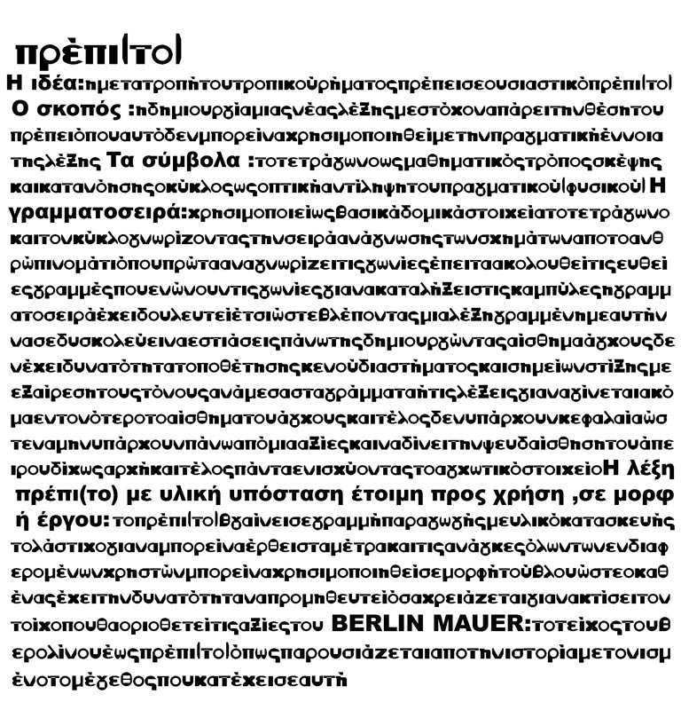
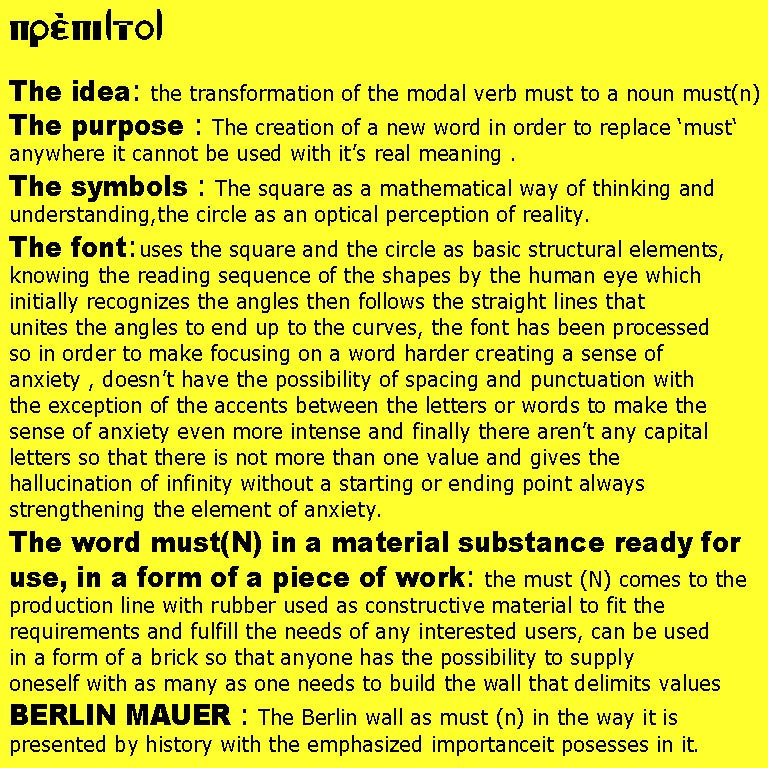
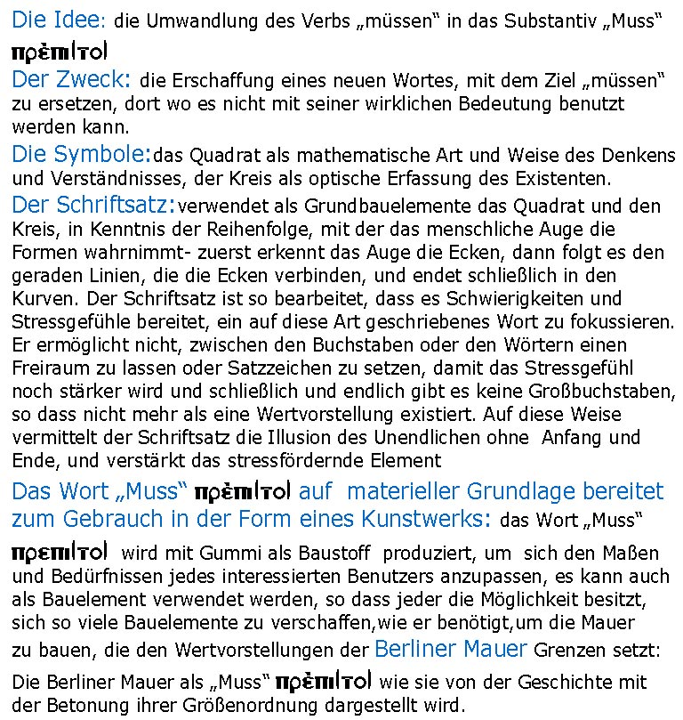

<div class="videoWrapper">
<iframe src="http://player.vimeo.com/video/28991781?title=0&amp;byline=0&amp;portrait=0" width="768" height="432" frameborder="0" webkitAllowFullScreen allowFullScreen></iframe>
</div>




